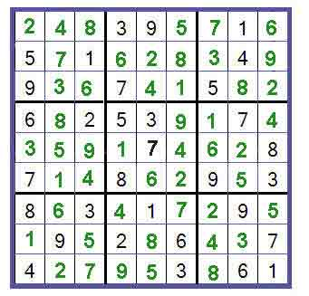

A standard Sudoku puzzle consists of a grid of 9 blocks. Each block contains 9 boxes arranged in 3 rows and 3 columns.
Consider this example of a Sudoku puzzle:
example
Basic Rules of Sudoku:
· There is only one valid solution to each Sudoku puzzle. The only way the puzzle can be considered solved correctly is when all 81 boxes contain numbers and the other Sudoku rules have been followed.
· When you start a game of Sudoku, some blocks will be pre-filled for you. You cannot change these numbers in the course of the game.
·Each column must contain all of the numbers 1 through 9 and no two numbers in the same column of a Sudoku puzzle can be the same.
· Each row must contain all of the numbers 1 through 9 and no two numbers in the same row of a Sudoku puzzle can be the same.
· Each block must contain all of the numbers 1 through 9 and no two numbers in the same block of a Sudoku puzzle can be the same.

Sudoku Solution When the rules are applied, the solved Sudoku puzzle appears as shown:
Sudoku solution